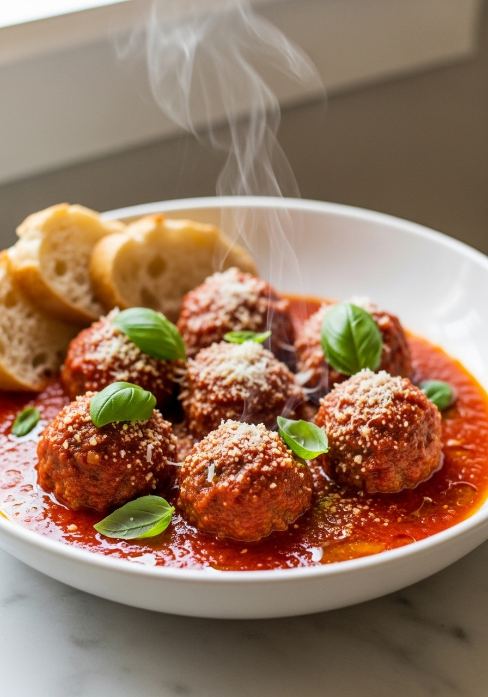
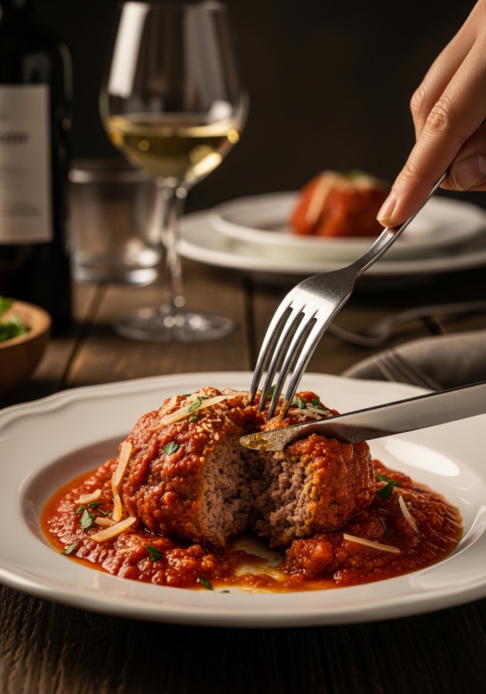

Le polpette al sugo sono il piatto della domenica per eccellenza, quello che profuma tutta la casa fin dal mattino. Ogni nonna italiana ha la sua versione — ma i segreti sono sempre gli stessi: carne mista (non solo manzo), pane raffermo ammollato nel latte (non pangrattato), uova per legare, e un sugo di pomodoro denso e profumato nel quale le polpette terminano la cottura. Il risultato sono polpette morbide, succose, che si sciolgono letteralmente in bocca — impossibili da ottenere con le polpette cotte solo in padella o al forno.

DomenicaIl segreto delle polpette della nonna non è nella lista ingredienti — è nella tecnica. Le nonne usavano sempre il pane raffermo di due giorni ammollato nel latte, non il pangrattato industriale. Il pane assorbe i succhi della carne durante la cottura e li rilascia man mano che si mangia, creando una texture tenera e umida impossibile da ottenere con il pangrattato. Il secondo segreto è la carne: le nonne usavano carne mista — quello che avevano in casa — spesso con salsiccia che aggiunge sapore e grasso. Il terzo segreto è la cottura nel sugo: non in forno, non solo in padella — le polpette finiscono sempre nel sugo che le mantiene umide e le insaporisce dall'esterno.
Le polpette cotte solo in padella sono croccanti fuori ma possono essere asciutte dentro. Le polpette al forno sono più leggere ma mancano del sapore della rosolatura. Le polpette cotte nel sugo (la tecnica tradizionale italiana) sono le più morbide: la carne finisce di cuocere nell'umidità del sugo, assorbendo il sapore del pomodoro, mentre il sugo a sua volta si arricchisce dei succhi della carne. Per le polpette perfette, la tecnica in tre fasi è insuperabile: forma → rosola → finisci nel sugo.
Ingredienti
Procedimento

Le polpette al sugo si conservano in frigorifero per 3-4 giorni in un contenitore ermetico — migliorano il giorno dopo. Si congelano perfettamente con il loro sugo per 3 mesi. Le polpette avanzate sono versatili: schiacciale e usale come condimento per la pasta (il sugo diventa un ragù instant ottimo), mettile in un panino con mozzarella e basilico, o scaldale e servile su bruschetta di pane tostato. In Campania è tradizione usare le polpette al sugo per condire gli spaghetti come primo e servire le polpette come secondo — un solo sugo per due portate magnifiche.
Puoi, ma le polpette risulteranno più asciutte e meno saporite. Il grasso del maiale è quello che le rende morbide. Se vuoi usare solo manzo, scegli un macinato non troppo magro (almeno 15-20% di grasso) e aggiungi un cucchiaio di olio d'oliva nell'impasto per compensare la mancanza di grasso del maiale.
Le polpette si sfaldano quando l'impasto ha troppa umidità (pane non strizzato abbastanza), troppo poca colla (mancano le uova o il Parmigiano) o quando vengono girate troppo presto. Aspetta che si formi la crosticina prima di girarle — si staccano da sole dalla padella quando sono pronte.
La dimensione classica è quella di una pallina da golf, circa 40-45g. Polpette troppo grandi (oltre 60g) rischiano di rimanere crude dentro prima che si brucino fuori. Polpette troppo piccole si seccano rapidamente. La dimensione media garantisce cottura uniforme e la giusta proporzione crosta-interno morbido.
Assolutamente sì. Puoi preparare l'impasto la sera prima e conservarlo in frigorifero: il freddo compatta la carne e facilita la formatura. Puoi anche preparare le polpette complete con il sugo: il giorno dopo sono ancora più buone, con sapori più amalgamati.
Sì per una versione più leggera: disponi le polpette su carta forno, irrora con un filo d'olio e inforna a 200°C per 20 minuti. Poi aggiungile al sugo per altri 15 minuti. Risparmierai olio ma il sapore della rosolatura sarà meno intenso. Per una versione ancora più leggera, metti le polpette crude direttamente nel sugo: ci vorranno 40-45 minuti a fuoco bassissimo.